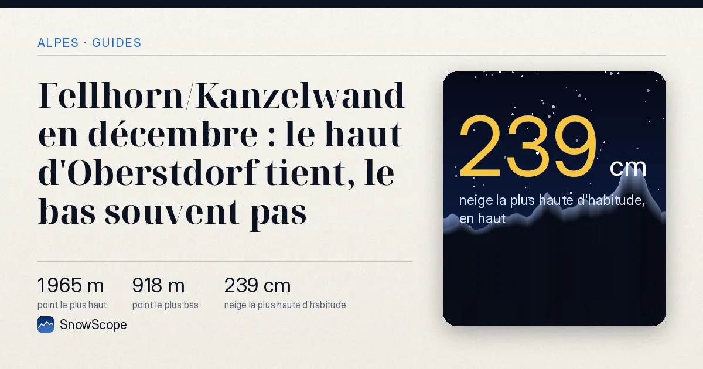

Fellhorn/Kanzelwand en décembre : le haut d'Oberstdorf tient, le bas souvent pas
L'enneigement de Fellhorn/Kanzelwand en décembre dépend entièrement de l'altitude où vous skiez. La haute montagne reste fiable tandis que le pied de station reste mince, ce qui force un choix : payer pour la descente en téléphérique ou réserver plus tard en hiver quand la base s'étoffe.
Consultez les prévisions neige en temps réel pour Fellhorn/Kanzelwand sur l'application SnowScopeHauteurs de neige, alertes poudreuse et carte 3D, gratuitement.
Haute montagne : où la neige de décembre s'accumule
Le sommet à 1 965 m vit dans un hiver différent du village. Un 15 décembre typique porte 63 cm, et 93 pour cent des 46 derniers hivers ont eu 30 cm ou plus lors de la semaine du 15-21 décembre et lors de la semaine de Noël. Le 24 décembre, la profondeur typique atteint 88 cm.
Cette stabilité fait des pistes supérieures le pari le plus sûr en décembre. La crête elle-même est exposée au vent après les tempêtes, consultez donc les bulletins d'avalanches bavarois et du Vorarlberg avant de partir.


Mi-montagne : la zone intermédiaire
À 1 441 m, mi-montagne oscille entre fiable et mince. Un 15 décembre typique compte 30 cm. Les probabilités s'améliorent à l'approche de Noël : 59 pour cent des hivers ont atteint 30 cm la semaine du 15-21 décembre, montant à 70 pour cent lors de la semaine de Noël.
C'est là que votre période compte. Réservez du 15-21 décembre et vous trouverez 30 cm la plupart des jours ; réservez du 8-14 décembre et vous jouez à pile ou face. À la semaine de Noël, les probabilités jouent en votre faveur.
Le pied de station : souvent trop mince pour être de confiance
À 918 m, décembre est imprévisible. La profondeur typique le 15 décembre est de seulement 10 cm, et 11 des 46 derniers hivers ont eu du sol nu cette date. Seulement 13 pour cent des hivers ont vu 30 cm à la semaine de Noël. Le premier jour habituel avec 30 cm à la base est le 21 janvier.
Ces chiffres signifient : prévoyez de descendre en téléphérique, ou réservez cette station pour janvier et février quand le pied s'étoffe. L'hiver dernier a été pire que la moyenne : seulement 2 cm le 15 décembre et 0 cm le jour de Noël.
La vue d'ensemble : décembre s'affaiblit
Au cours des 15 derniers hivers, décembre s'est amenuisé par rapport aux 15 premiers hivers des archives (1980-81 à 1994-95). Le sommet affiche une moyenne de 59 cm maintenant contre 63 cm alors ; mi-montagne est passée de 34 cm à 28 cm. Le pourcentage d'hivers avec 30 cm à mi-montagne la semaine de Noël a chuté de 73 pour cent à 53 pour cent.
Cette tendance suggère de réserver la semaine de Noël aux altitudes plus élevées uniquement, ou de décaler votre séjour de décembre au début du mois quand le sommet est le plus frais.
Tarifs : la fenêtre de l'Avent rapporte
La saison 2026-27 affiche un tarif unique (72,90 EUR par jour) pendant toute la période de l'Avent jusqu'au 20 décembre, puis la haute saison commence. L'abonnement 6 jours coûte 344,50 EUR en Avent et 382,80 EUR après, économisant 38,30 EUR si vous terminez avant le 20 décembre.
L'abonnement couvre tous les remontées et téléphériques d'Oberstdorf et du Kleinwalsertal, vous pouvez donc circuler entre les domaines. Une semaine encadrée par les 15-20 décembre vous donne la réduction tarifaire et les meilleures probabilités à mi-montagne.
Oberjoch : moins cher mais plus mince
Oberjoch près de Bad Hindelang coûte moins cher (55 EUR par jour, 278 EUR pour 6 jours) mais est situé plus bas et s'amenuise plus vite. Son sommet à 1 556 m a 30 cm un 15 décembre typique contre 63 cm ici ; mi-montagne n'atteint 30 cm que dans 28 pour cent des hivers la semaine du 15-21 décembre. L'ouverture est prévue le 11 décembre, selon les conditions météorologiques.
Si le budget est la priorité et que vous pouvez attendre après Noël, Oberjoch fonctionne. Pour la fiabilité de décembre, le coût supplémentaire de Fellhorn/Kanzelwand achète vraiment de la neige.
Conseils aux skieurs
- Réservez votre abonnement 6 jours pour terminer avant le 20 décembre et payez le tarif de l'Avent (344,50 EUR au lieu de 382,80 EUR après le 20).
- Attendez-vous à emprunter le téléphérique pour descendre la plupart des jours de décembre ; ne comptez pas sur 30 cm à la base avant janvier.
- Si le vent ferme le sommet, utilisez votre abonnement régional pour vous déplacer vers le terrain de mi-montagne ou basculer vers les remontées voisines du Kleinwalsertal.
- La semaine de Noël, mi-montagne offre le meilleur équilibre entre profondeur de neige et conditions constantes aux deux altitudes.
- Après une chute de neige fraîche sur la crête exposée, consultez les bulletins d'avalanches bavarois (Lawinenwarndienst Bayern) et du Vorarlberg avant de skier hors-piste.
À propos de ces chiffres
Les hauteurs de neige des stations sont la neige la plus épaisse sur le haut du domaine à la date indiquée ; ce sont des estimations pour une zone, pas une mesure en un point. Les prévisions peuvent changer. Consultez toujours le bulletin d'avalanche officiel avant le hors-piste.
Bulletins d'avalanche officiels: Lawinenwarndienst Bayern
Citer ce bulletin
Pour la recherche, l'enseignement ou la presse : chiffres et graphiques réutilisables librement sous CC BY 4.0 avec cette citation.
SnowScope (2026), Fellhorn/Kanzelwand en décembre : le haut d'Oberstdorf tient, le bas souvent pas, https://snowscope.app/blog/fr/2026/11/fellhorn-kanzelwand-december-oberstdorf-ski-budget.html, consulté le 2026-11-14
SnowScope (Atlas Labs). (2026, November 14). Fellhorn/Kanzelwand en décembre : le haut d'Oberstdorf tient, le bas souvent pas. SnowScope snow reports. https://snowscope.app/blog/fr/2026/11/fellhorn-kanzelwand-december-oberstdorf-ski-budget.html
BibTeX
@misc{snowscope2026fellhornkanzelwanddecemb,
author = {{SnowScope (Atlas Labs)}},
title = {Fellhorn/Kanzelwand en décembre : le haut d'Oberstdorf tient, le bas souvent pas},
year = {2026},
month = nov,
howpublished = {\url{https://snowscope.app/blog/fr/2026/11/fellhorn-kanzelwand-december-oberstdorf-ski-budget.html}},
note = {Published 2026-11-14 16:14 UTC; accessed 2026-11-14}
}· CC BY 4.0 · Méthodes, données et outils →
Fellhorn/Kanzelwand : neige et température selon l'altitude, cet hiver vs l'hiver dernier (outils) →
Suivre Fellhorn/Kanzelwand
Gratuit : un message quand la neige arrive, et la météo chaque matin.